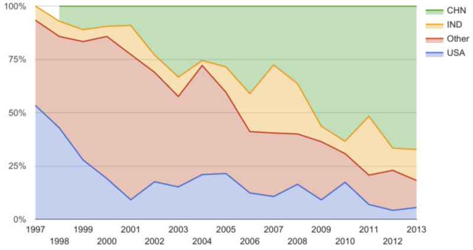

In September, 2015, 19 students began their studies in the University of Michigan's new Quantitative Finance and Risk Management program. This program is a successor to an earlier quant program. The Industrial & Operations Engineering department created the U of M's Masters of Science in Financial Engineering (MSFE) program, which admitted its first class in 1997. The program moved to the Ross School of Business, and continued until 2014, when the last formal class graduated. The program had a similar mission to today's quant program, and it is worth studying what became of the earlier program's graduates.
To study this, we gathered data via web search, especially LinkedIn, in June 2017. This captured employment information on 486 of the 700+ graduates of the MSFE program. The intention is to extend this data to include the new Masters in Quantitative Finance and Risk Management. It will be periodically updated.
We are primarily interested in what we can learn about employed graduates. The data on non-employed graduates tends to be extremely thin, so it is difficult to draw meaningful conclusions about them. Below is the breakdown of what we've found. The rest of our analysis is restricted to the employed graduates.
| 1997 | 1998 | 1999 | 2000 | 2001 | 2002 | 2003 | 2004 | 2005 | 2006 | 2007 | 2008 | 2009 | 2010 | 2011 | 2012 | 2013 | Grand Total | |
|---|---|---|---|---|---|---|---|---|---|---|---|---|---|---|---|---|---|---|
| deceased | 1 | 1 | 2 | |||||||||||||||
| employed | 9 | 10 | 14 | 9 | 12 | 39 | 28 | 26 | 26 | 40 | 31 | 44 | 40 | 42 | 40 | 34 | 42 | 486 |
| looking | 2 | 2 | 4 | |||||||||||||||
| retired | 1 | 1 | 1 | 3 | ||||||||||||||
| self-employed | 1 | 1 | ||||||||||||||||
| student | 1 | 2 | 1 | 1 | 2 | 2 | 9 | |||||||||||
| unemployed | 2 | 2 | ||||||||||||||||
| unknown | 5 | 3 | 2 | 12 | 31 | 33 | 35 | 16 | 14 | 30 | 16 | 11 | 15 | 9 | 16 | 12 | 13 | 273 |
| Grand Total | 15 | 14 | 18 | 21 | 44 | 74 | 66 | 43 | 42 | 73 | 47 | 55 | 55 | 52 | 58 | 48 | 55 | 780 |
Many of the students have post-graduate degrees, including PhDs, MBAs, JDs, even an MD. You can see a summary here.
Students have been hired at over 300 different firms, with half of the jobs going to the top 30 employers. You can see the complete list here. These jobs are in these cities.
One clear trend has been the shift in the citizenship of our students over the years, a trend that has been continued by the current program. Across the board, the fraction of students from China has grown. The new program has admitted 94%-100% Chinese students each year. 